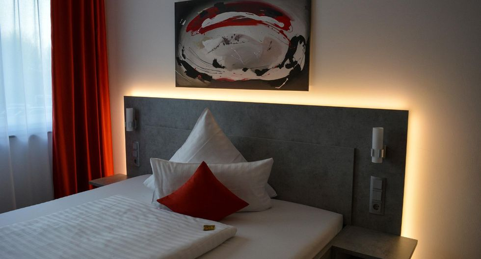

Fui botones en el Hotel Las Brisas de Acapulco.
Fui botones en el Hotel Las Brisas de Acapulco.
Trabajé como mesero en el condominio Playamar 2, ubicado en la zona diamante de Acapulco, adquiriendo experiencia en el área.
Desempeñé labores de mesero en el restaurante del Hotel Las Brisas de Acapulco.
Cuidador en el área de informática de los laboratorios del Conalep.